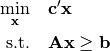

invo - An Inverse Optimization Library¶
invo is a Python package intended to simplify the use of inverse optimization as a model fitting practice. Our goal is to provide a general framework for formulating and solving inverse optimization problems, as well as implement a collection of inverse methods. As additional algorithms and methods arise in the literature, we can implement them using the same common framework.
The flavour of this work is inspired from scikit-learn on Python.
Usage¶
An invo problem has two stages. You first define a forward model, and then you solve the corresponding inverse optimization problem. Currently, we assume forward problems are given in inequality form

The following is an example of generating a random feasible set and a random set of points and solving the corresponding inverse optimization problem:
import numpy as np
from invo.LinearModels import AbsoluteDualityGap
# Construct a random forward problem.
vertices = [ np.random.rand(4) for i in range(8) ]
from invo.utils.fwdutils import fit_convex_hull
A, b = fit_convex_hull(vertices)
# Construct a set of optimal observed decisions.
optimalPoints = [ np.random.rand(4) for i in range(4) ]
# Add the forward problem, then run inverse optimization.
model = AbsoluteDualityGap()
model.FOP(A, b)
model.solve(optimalPoints)
print (model.c)